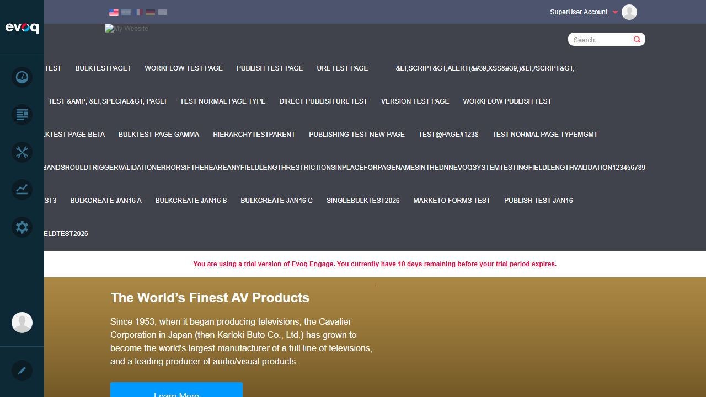

CRITICAL BUG: Community Analytics Module Fails to Load
The Community Analytics module fails to initialize due to a JavaScript error. This prevents ALL functionality in the module from being tested, including the Blogs Module Analytics feature.
Error Message:
TypeError: utility.serializeCustomDate is not a function
at dashboardClass.init (social-dashboard-combined-instance.js:1025:39)
at Object.init (social-dashboard-combined.js:16:23)
at extension.js:104:32
Impact: The entire Community Analytics panel renders blank/empty. Users cannot access any community analytics features including Blogs, Answers, Wiki, Ideas, or any other module-specific analytics.
Comparison: Site Analytics (under the same Dashboard menu) loads and functions correctly, proving this is an issue specific to the Community Analytics module.
Feature Description
Blogs Module Analytics provides an analytics dashboard for blog content including post views, comments, and engagement metrics. It should allow administrators to:
- View blog post statistics
- Track comment engagement
- Monitor blog author activity
- View popular blog posts
- Verify blog-specific metrics
- Compare blog performance over time
Test Results
Test 1: View Blog Post Statistics FAIL
Objective: View statistics for blog posts including views and engagement metrics.
Steps Taken:
- Logged in as SuperUser (host)
- Navigated to PersonaBar > Dashboard > Community Analytics
- Attempted to access Blogs tab
Result: FAIL - Community Analytics panel is blank due to JavaScript error. Cannot access any blog statistics.

Community Analytics panel shows blank content due to JavaScript initialization error
Test 2: Track Comment Engagement FAIL
Objective: View and track comment engagement metrics for blogs.
Steps Taken:
- Attempted to navigate to Community Analytics > Blogs Tab
- Panel failed to load - no UI elements visible
Result: FAIL - Cannot test comment engagement tracking because the Community Analytics module does not load.
Test 3: Monitor Blog Author Activity FAIL
Objective: Monitor and view blog author activity metrics.
Steps Taken:
- Attempted to access author activity metrics through Community Analytics
- Module fails to render any content
Result: FAIL - Author activity monitoring is inaccessible due to module initialization failure.
Test 4: Popular Blog Posts Display FAIL
Objective: View popular blog posts ranking and metrics.
Steps Taken:
- Attempted to view popular content through Community Analytics
- Panel displays empty content area
Result: FAIL - Popular blog posts display cannot be tested as the module UI does not render.
Test 5: Verify Blog-Specific Metrics FAIL
Objective: Verify that blog-specific metrics are accurate and displayed correctly.
Steps Taken:
- Attempted to access blog metrics dashboard
- No metrics visible due to module failure
Result: FAIL - Blog-specific metrics cannot be verified because the analytics dashboard does not load.
Test 6: Compare Blog Performance Over Time FAIL
Objective: Compare blog performance across different time periods.
Steps Taken:
- Attempted to access time-based comparison features
- No date range selector or comparison tools visible
Result: FAIL - Time-based performance comparison cannot be tested as the module fails to initialize.
Evidence Screenshots
Login Confirmation (Setup)

Successfully logged in as SuperUser Account - PersonaBar visible with Dashboard menu
Community Analytics - Blank Panel

Dashboard menu expanded showing Community Analytics option - main content area is blank
Site Analytics - Working (Comparison)

Site Analytics loads correctly with date range, tabs, and content sections - proving the issue is specific to Community Analytics
Observations
- Code Review Finding: The code in
Services/CommunityAnalyticsController.cs includes methods like GetModuleDashboardInfo and GetModulePopularContent that accept a moduleName parameter (e.g., "Blogs"). These APIs appear to be properly implemented, but the frontend JavaScript fails before these can be called.
- Root Cause: The JavaScript file
social-dashboard-combined-instance.js attempts to call utility.serializeCustomDate() at line 1025 during initialization, but this function does not exist in the utility object.
- Scope of Impact: This bug affects all Community Analytics features, not just Blogs Module Analytics. All module-specific analytics (Answers, Wiki, Ideas, etc.) would also be inaccessible.
- Workaround: None available - the module is completely non-functional in its current state.
- Recommendation: The
utility.serializeCustomDate function needs to be defined in the utility module, or the call to it needs to be fixed/removed from the initialization code.
Conclusion
All 6 test scenarios for Blogs Module Analytics have FAILED due to a critical JavaScript bug in the Community Analytics module. The bug (TypeError: utility.serializeCustomDate is not a function) prevents the module from initializing, resulting in a completely blank panel.
This is a HIGH PRIORITY bug that should be addressed before the Community Analytics feature can be used in production.